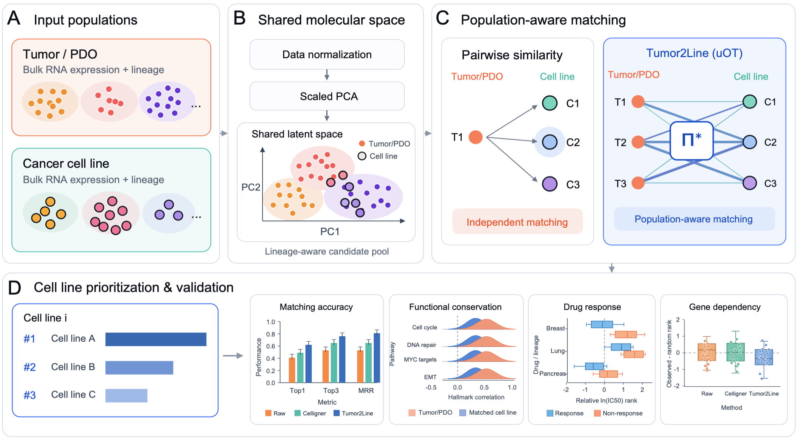

Overview
Tumor2Line is a transcriptome-based framework for matching a query population to candidate cancer cell lines. Query samples can be patient tumors, PDOs, PDXs, organoids, or other tumor-derived models. The standard workflow harmonizes expression data, applies log2(TPM + 1), selects variable genes, constructs a shared scaled-PCA representation, and performs population-aware matching with unbalanced optimal transport (uOT).

The Overview of Tumor2Line
Known query-cell-line pairs are not required. When ground-truth pairs are available, matching can be evaluated with Top1 accuracy, Top3 accuracy, mean reciprocal rank (MRR), and true-pair rank.
☀️ Key Features
- Query population can be tumors, PDOs, PDXs, organoids, or related models.
- Population-aware matching with unbalanced optimal transport.
- Shared scaled-PCA molecular representation.
- Lineage-aware or global candidate pools.
- Query-specific candidate ranking and matching probabilities.
- Optional known-pair evaluation with Top1, Top3, MRR, and true-pair rank.
- Visualization utilities for accuracy, rank distributions, and top candidates.
⏬ Installation
# install.packages("devtools")
devtools::install_github(
"Duan-Lab1/Tumor2Line",
dependencies = c("Depends", "Imports", "LinkingTo")
)
library(Tumor2Line)A source package can also be installed locally:
install.packages("Tumor2Line_0.1.2.tar.gz", repos = NULL, type = "source")🚀 Quick Start
Read the bundled PDMR-format example
The tutorial example is stored directly in inst/extdata:
query_expr_path <- system.file("extdata", "PDMR_tumor_expr.tsv", package = "Tumor2Line")
cell_expr_path <- system.file("extdata", "PDMR_cellline_expr.tsv", package = "Tumor2Line")
phenotype_path <- system.file("extdata", "PDMR_phenotype.tsv", package = "Tumor2Line")
query_expr <- utils::read.delim(query_expr_path, check.names = FALSE)
cellline_expr <- utils::read.delim(cell_expr_path, check.names = FALSE)
phenotype <- utils::read.delim(phenotype_path, check.names = FALSE)The PDMR-format example contains known pairs, but pairing information is used only for evaluation.
Prepare data
prepared <- prepare_tumor2line_data(
query_expr = query_expr,
cellline_expr = cellline_expr,
phenotype = phenotype,
sample_id_col = "SampleID",
pair_col = "PairID",
lineage_col = "lineage",
sample_type_col = "SampleClass",
query_type = "tumor"
)
prepared$cohort_summary
head(prepared$gold_pairs)Run Tumor2Line
result <- run_tumor2line(
query_expr = query_expr,
cellline_expr = cellline_expr,
phenotype = phenotype,
sample_id_col = "SampleID",
pair_col = "PairID",
lineage_col = "lineage",
sample_type_col = "SampleClass",
query_type = "tumor",
n_variable_genes = 10000,
pca_variance_threshold = 0.90,
max_pcs = NULL,
candidate_scope = "within_lineage",
distance = "euclidean",
epsilon = 0.1,
rho_query = 1,
rho_cellline = 1
)
resultBy default, max_pcs = NULL, so the retained PC number is determined by pca_variance_threshold unless the user explicitly supplies an upper limit.
Inspect candidate rankings
head(result$ranking)
result$top_matches
get_top_matches(result, n = 5)
example_query <- result$input$query_ids[1]
get_top_matches(result, n = 5, query_id = example_query)For each query, rank = 1 is the highest-priority candidate cell line.
Evaluate known pairs
result$evaluation$summary
head(result$evaluation$pair_ranks)
result$evaluation$lineage
plot_tumor2line_accuracy(result)
plot_true_pair_ranks(result)
plot_top_matches(result, query_id = example_query, n = 5)Run without known pairs
Known pairs are optional:
result <- run_tumor2line(
query_expr = query_expr,
cellline_expr = cellline_expr,
phenotype = phenotype,
pair_col = NULL,
lineage_col = "lineage",
query_type = "tumor",
candidate_scope = "within_lineage"
)For expression-only data without lineage metadata, use a global candidate pool:
result <- run_tumor2line(
query_expr = query_expr,
cellline_expr = cellline_expr,
phenotype = NULL,
candidate_scope = "global"
)PDMR development-data generation
data-raw/debug.R reads the original development files and creates standardized resources under inst/extdata/:
PDMR_tumor_expr.tsv
PDMR_cellline_expr.tsv
PDMR_phenotype.tsv
PDMR_pairs.tsvThe public tutorial reads the bundled example files directly with system.file() and does not require a separate I/O helper function.
📖 Vignette
utils::browseVignettes(package = "Tumor2Line")The complete workflow is provided in vignettes/Tumor2Line-tutorial.Rmd.
💖 Contributing
Contributions, suggestions and bug reports are welcome through the Tumor2Line issue tracker.